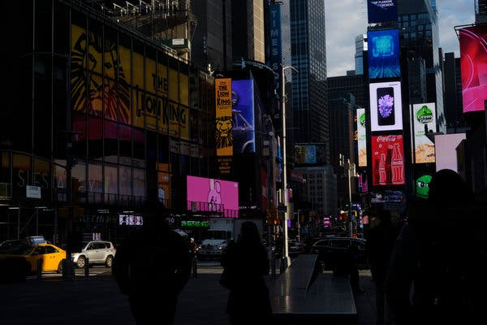
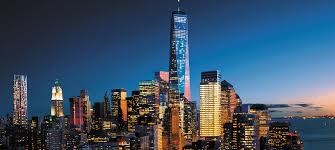
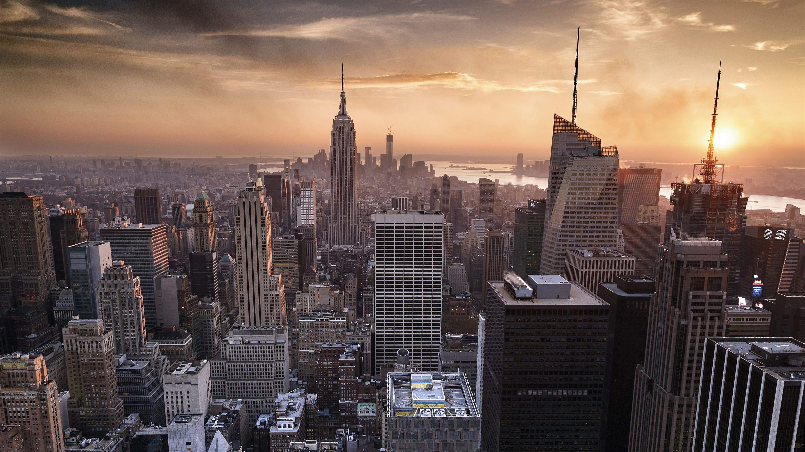
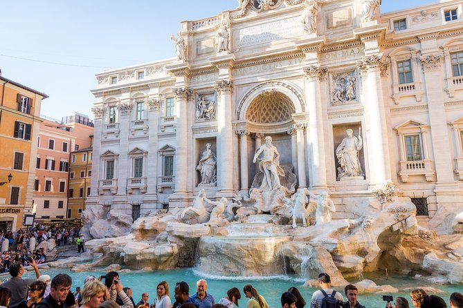
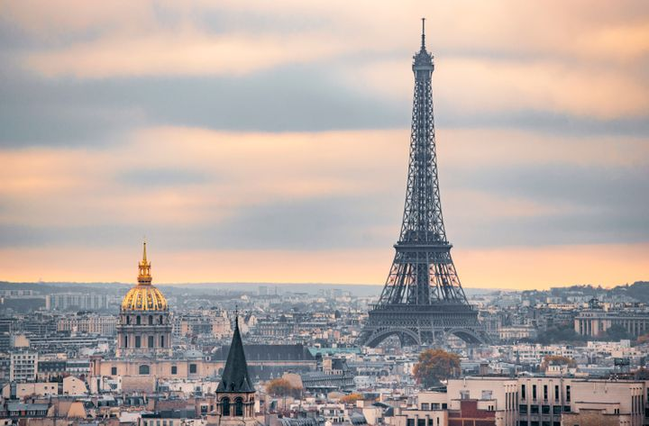

- 
- 

- 
- 

Travel
These are my favourite three places i have visited in my life
New York
The City of New York, usually known as either New York City (NYC), or simply New York (NY), is the most populous city in the United States. With an estimated 2018 population of 8,398,748 distributed over about 302.6 square miles (784 km2), New York is also the most densely populated major city in the United States. Located at the southern tip of the U.S. state of New York, the city is the center of the New York metropolitan area, the largest metropolitan area in the world by urban landmass. With almost 20 million people in its metropolitan statistical area and approximately 23 million in its combined statistical area, it is one of the world's most populous megacities. New York City has been described as the cultural, financial, and media capital of the world, significantly influencing commerce, entertainment, research, technology, education, politics, tourism, art, fashion, and sports. Home to the headquarters of the United Nations, New York is an important center for international diplomacy. Situated on one of the world's largest natural harbors, New York City is divided into five administrative boroughs, each of which is a separate county of the State of New York. The five boroughs – Brooklyn, Queens, Manhattan, The Bronx, and Staten Island – were consolidated into a single city in 1898. The city and its metropolitan area constitute the premier gateway for legal immigration to the United States. As many as 800 languages are spoken in New York, making it the most linguistically diverse city in the world. New York is home to 3.2 million residents born outside the United States, the largest foreign-born population of any city in the world as of 2016. As of 2019, the New York metropolitan area is estimated to produce a gross metropolitan product (GMP) of $2.0 trillion. If greater New York City were a sovereign state, it would have the 12th highest GDP in the world. New York is home to the highest number of billionaires of any city in the world. New York City traces its origins to a trading post founded by colonists from the Dutch Republic in 1624 on Lower Manhattan; the post was named New Amsterdam in 1626. The city and its surroundings came under English control in 1664 and were renamed New York after King Charles II of England granted the lands to his brother, the Duke of York. New York was the capital of the United States from 1785 until 1790, and has been the largest U.S. city since 1790. The Statue of Liberty greeted millions of immigrants as they came to the U.S. by ship in the late 19th and early 20th centuries and is a symbol of the U.S. and its ideals of liberty and peace. In the 21st century, New York has emerged as a global node of creativity and entrepreneurship and environmental sustainability, and as a symbol of freedom and cultural diversity. In 2019, New York was voted the greatest city in the world per a survey of over 30,000 people from 48 cities worldwide, citing its cultural diversity. Many districts and landmarks in New York City are well known, including three of the world's ten most visited tourist attractions in 2013. A record 62.8 million tourists visited New York City in 2017. Times Square is the brightly illuminated hub of the Broadway Theater District, one of the world's busiest pedestrian intersections, and a major center of the world's entertainment industry. Many of the city's landmarks, skyscrapers, and parks are known around the world. Manhattan's real estate market is among the most expensive in the world. New York is home to the largest ethnic Chinese population outside of Asia, with multiple distinct Chinatowns across the city. Providing continuous 24/7 service, the New York City Subway is the largest single-operator rapid transit system worldwide, with 472 rail stations. The city has over 120 colleges and universities, including Columbia University, New York University, and Rockefeller University, ranked among the top universities in the world. Manhattan is home to the world's two largest stock exchanges by total market capitalization, namely the New York Stock Exchange, located on Wall Street in the Financial District of Lower Manhattan, and NASDAQ, headquartered in Midtown Manhattan.
Rome
Rome (Latin and Italian Roma [ˈroːma] (About this soundlisten), is the capital city and a special comune of Italy (named Comune di Roma Capitale). Rome also serves as the capital of the Lazio region. With 2,879,728 residents in 1,285 km2 (496.1 sq mi), it is also the country's most populated comune. It is the third most populous city in the European Union by population within city limits. It is the centre of the Metropolitan City of Rome, which has a population of 4,355,725 residents, thus making it the second or third most populous metropolitan city in Italy depending on definition. Rome is located in the central-western portion of the Italian Peninsula, within Lazio (Latium), along the shores of the Tiber. Vatican City (the smallest country in the world) is an independent country inside the city boundaries of Rome, the only existing example of a country within a city; for this reason Rome has sometimes been defined as the capital of two states. Rome's history spans 28 centuries. While Roman mythology dates the founding of Rome at around 753 BC, the site has been inhabited for much longer, making it one of the oldest continuously occupied cities in Europe. The city's early population originated from a mix of Latins, Etruscans, and Sabines. Eventually, the city successively became the capital of the Roman Kingdom, the Roman Republic and the Roman Empire, and is regarded by many as the first ever Imperial City and metropolis. It was first called The Eternal City (Latin: Urbs Aeterna; Italian: La Città Eterna) by the Roman poet Tibullus in the 1st century BC, and the expression was also taken up by Ovid, Virgil, and Livy. Rome is also called "Caput Mundi" (Capital of the World). After the fall of the Empire in the west, which marked the beginning of the Middle Ages, Rome slowly fell under the political control of the Papacy, and in the 8th century it became the capital of the Papal States, which lasted until 1870. Beginning with the Renaissance, almost all popes since Nicholas V (1447–1455) pursued a coherent architectural and urban programme over four hundred years, aimed at making the city the artistic and cultural centre of the world. In this way, Rome became first one of the major centres of the Italian Renaissance, and then the birthplace of both the Baroque style and Neoclassicism. Famous artists, painters, sculptors and architects made Rome the centre of their activity, creating masterpieces throughout the city. In 1871, Rome became the capital of the Kingdom of Italy, which, in 1946, became the Italian Republic. As of 2020, Rome is ranked as an Alpha global city by the Globalization and World Cities Research Network. In 2019, Rome was the 11th most visited city in the world, third most visited in the European Union, and the most popular tourist destination in Italy. Its historic centre is listed by UNESCO as a World Heritage Site. Host city for the 1960 Summer Olympics, Rome is also the seat of several specialized agencies of the United Nations, such as the Food and Agriculture Organization (FAO), the World Food Programme (WFP) and the International Fund for Agricultural Development (IFAD). The city also hosts the Secretariat of the Parliamentary Assembly of the Union for the Mediterranean (UfM) as well as the headquarters of many international business companies such as Eni, Enel, TIM, Leonardo S.p.A., and national and international banks such as Unicredit and BNL. Rome's EUR business district is the home of many companies involved in the oil industry, the pharmaceutical industry, and financial services. The presence of renowned international brands in the city have made Rome an important centre of fashion and design, and the Cinecittà Studios have been the set of many Academy Award–winning movies.
Paris
Paris (French pronunciation: [paʁi] (About this soundlisten)) is the capital and most populous city of France, with a population of 2,148,271 residents (official estimate, 1 January 2020) in an area of 105 square kilometres (41 square miles). Since the 17th century, Paris has been one of Europe's major centres of finance, diplomacy, commerce, fashion, science and arts. The City of Paris is the centre and seat of government of the Île-de-France, or Paris Region, which has an estimated official 2020 population of 12,278,210, or about 18 percent of the population of France. The Paris Region had a GDP of €709 billion ($808 billion) in 2017. According to the Economist Intelligence Unit Worldwide Cost of Living Survey in 2018, Paris was the second most expensive city in the world, after Singapore, and ahead of Zürich, Hong Kong, Oslo and Geneva. Another source ranked Paris as most expensive, on a par with Singapore and Hong Kong, in 2018. The city is a major railway, highway and air-transport hub served by two international airports: Paris-Charles de Gaulle (the second busiest airport in Europe) and Paris-Orly. Opened in 1900, the city's subway system, the Paris Métro, serves 5.23 million passengers daily; it is the second busiest metro system in Europe after the Moscow Metro. Gare du Nord is the 24th busiest railway station in the world, but the first located outside Japan, with 262 million passengers in 2015. Paris is especially known for its museums and architectural landmarks: the Louvre was among most visited art museums in the world in 2019, with 9.6 million visitors. The Musée d'Orsay, Musée Marmottan Monet, and Musée de l'Orangerie are noted for their collections of French Impressionist art, the Pompidou Centre Musée National d'Art Moderne has the largest collection of modern and contemporary art in Europe, and the Musée Rodin and Musée Picasso exhibit the works of the two noted Parisians. The historical district along the Seine in the city centre is classified as a UNESCO Heritage Site, and popular landmarks in the city centre included the Cathedral of Notre Dame de Paris, now closed for renovation after the 15 April 2019 fire. Other popular tourist sites include the Gothic royal chapel of Sainte-Chapelle, both on the Île de la Cité; the Eiffel Tower, constructed for the Paris Universal Exposition of 1889; the Grand Palais and Petit Palais, built for the Paris Universal Exposition of 1900; the Arc de Triomphe on the Champs-Élysées, and the Basilica of Sacré-Coeur on the hill of Montmartre. Paris received 24.5 million visitors in 2018, measured by hotel stays, with the largest numbers of foreign visitors coming from the United States, the United Kingdom, Germany and China. It was ranked as the second most visited travel destination in the world in 2018, after Bangkok. The football club Paris Saint-Germain and the rugby union club Stade Français are based in Paris. The 80,000-seat Stade de France, built for the 1998 FIFA World Cup, is located just north of Paris in the neighbouring commune of Saint-Denis. Paris hosts the annual French Open Grand Slam tennis tournament on the red clay of Roland Garros. The city hosted the Olympic Games in 1900, 1924 and will host the 2024 Summer Olympics. The 1938 and 1998 FIFA World Cups, the 2007 Rugby World Cup, as well as the 1960, 1984 and 2016 UEFA European Championships were also held in the city. every July, the Tour de France bicycle race finishes on the Avenue des Champs-Élysées in Paris.